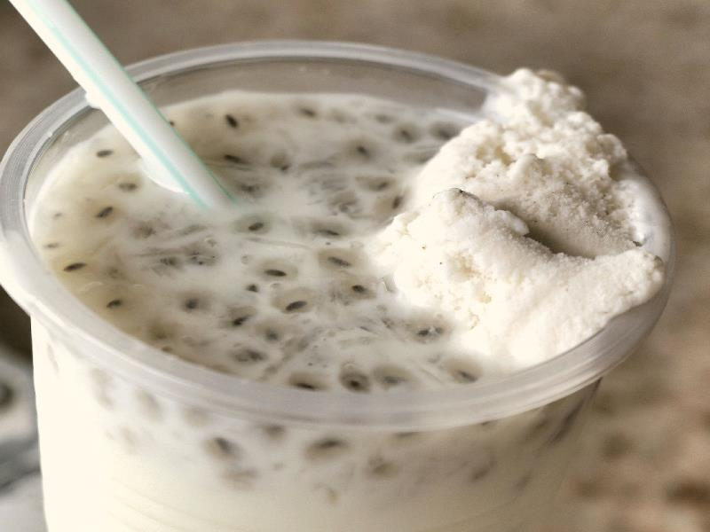

Alouda
A delicious cold beverage made with milk, basil seeds and agar-agar which is especially refreshing on a hot summer day.

Ingredients
- 250 ml milk
- 3-4 tablespoons condensed milk
- 2 tablespoons basil seeds
- 5 grams agar-agar
- 2 tablespoons vanilla essence
- 5-10 ice-cubes
- Vanilla ice-cream (optional)
Steps
- Soak the basil seeds in water for at least 30 minutes
- Dissolve the agar-agar in some water and bring to boil in a saucepan by adding some more water
- Boil for 5-8 minutes
- Remove from heat and pour in a deep utensil and allow to set in the fridge
- Once the agar agar is set, grate it
- In a blender combine the milk, condensed milk, vanilla essence and ice cubes and blend for a few minutes
- Pour in a serving jug
- Add the soaked basil seeds and the grated agar-agar
- Keep refrigerated and serve chilled with a tablespoon of vanilla ice-cream per glass